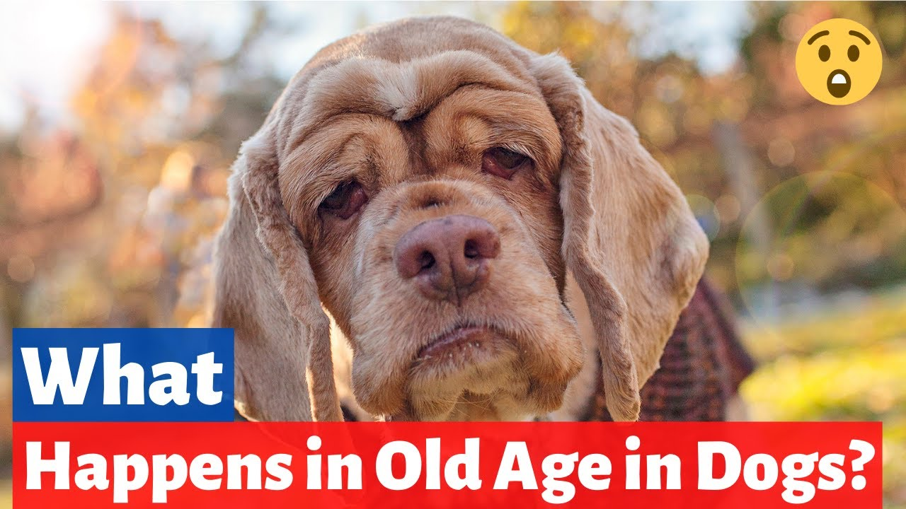

Research from "Royal Society for the Prevention of Cruelty to Animals" has shown that the average lifespan for purebred dogs is 11.9 years, with crossbred dogs averaging a longer 13.1 years. This obviously varies from breed to breed and dogs transition through the four stages of their life cycle at different speeds. The rate of ageing is determined by factors such as genetics, nutrition and quality of care.
Dogs go through four stages of the life cycle: puppy, adolescent, adulthood and senior. Let’s take a look at the four stages of a dog’s life cycle, so you can know what to expect.
Puppy
The puppy stage begins with birth and lasts until dogs are between six and eighteen months old. They are born deaf, blind and unable to regulate their body temperature.
At around 2-3 weeks, puppies start to see and hear and are able to stand and move around a little. With their senses developed, they now start to learn about their surroundings. This is the prime time to learn how to interact with humans and other pets.
A pup’s first eight weeks should be spent with their mother and siblings before beginning life with their new owner. The dog’s breeder will start the socialisation process and their new owner will expand upon it, whilst keeping them safe from infectious diseases before they have their vaccinations.
It is important to house train your dog during this stage and ensure they receive the vaccinations and care your vet recommends.
Adolescence
The adolescent stage of your dog’s life cycle will begin sometime between the ages of 6 and 18 months.
This is the stage of your dog’s life when hormones start to kick in, if not sprayed or neutered, your adolescent dog may show signs of moody ‘teenage’ behaviour, just like humans.
You may notice your dog being reluctant to pay attention and more likely to exhibit undesirable behaviour. Female adolescent dogs will go into heat and male adolescent dogs will become more interested in marking with urine and sniffing.
The adolescent dog stage may continue until your dog reaches 18-24 months for smaller breeds and up to 36 months in larger breeds. Training using gentle and consistent methods is highly recommended for adolescent dogs and can help to stop behavioural problems. You can find a reputable dog trainer near you by visiting the Association of Pet Dog Trainers’ website.
Adulthood
The adult stage of a dog’s life cycle begins at about 18 months for smaller breeds and up to 3 years for larger breeds.
Dogs become easier to manage, as their earlier training pays off, although they still enjoy walks, play and mental stimulation.
It is a great time to find activities that you and your dog can enjoy together, such as agility classes or hill walking.

Oldage
Dogs cycle through their life quickly and they fill our lives with so much joy. It is important to cherish each stage as a dog’s golden years will begin roughly between the ages of 7 and 10.
Their muzzle will tend to become grey and they will slow down, preferring a quiet stroll to an energetic run. More sleep is needed and joint or dental problems are common. It is vital to keep up with regular vet visits.
Larger breeds of dog will typically age faster, with the average lifespan being 11-12 years but some dogs can even make it past 20!